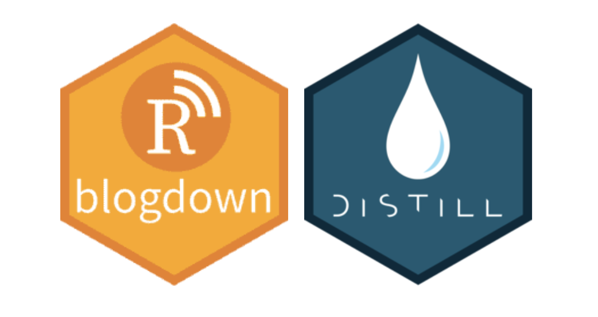
Eigen website maken met Quarto
0. Inleiding
Onlangs heb ik mijn web-site opnieuw gebouwd. Dit keer heb ik het met met Quarto gedaan. Quarto is dat prachtige programma waarmee je verschillende wetenschappelijke producten kunt maken zoals artikelen, rapporten, boeken, presentaties, blogs en dus ook websites. Het werkt met Python, VS Code, Observable en dus ook met R, waar ik zelf mee werk. Net zoals Lisa Lendway (https://lisalendway.netlify.app/posts/2020-12-09-buildingdistill/) eerder voor mij het beste uitlegde hoe Distill werkt (een ander R-programma waarmee je blogs en websites kunt bouwen), geeft Sem Csik (https://ucsb-meds.github.io/creating-quarto-websites/) hier een hele goede uitleg over websites bouwen met Quarto. Toen ik met mijn eigen website bezig was, las ik deze tekst heel goed en vertaalde de tekst voor deze blog. Zo maakte ik mij de werkwijze het beste eigen. Later maakte ze ook nog een tekst over hoe je de website-stijl naar je eigen hand kunt zetten. Daar zal ik ook nog eens aandacht aan besteden. Voor nu wil ik je hartelijke danken, Sem.
Zie hier(https://github.com/Jonkman1/Website-bouwen/blob/main/index.html)
1. Wat is  ?
?
Quarto is een publicatiesysteem gebouwd op Pandoc dat gebruikers in staat stelt dynamische inhoud te creëren met gebruik van R, Python, Julia en ObservableJS (met plannen om daar ook nog andere talen aan toe te voegen!).
R gebruikers zijn al lang gek op RMarkdown voor het combineren van tekst, code en outputs in enkel samengestelde (“geknitte”) documenten. Quarto breidt alle beste functies van RMarkdown (plus nog veel meer!) uit naar extra talen.
Ontwerpt van Allison Horst. Bekijk ook de rest van Allison’s serieus en aardige Quarto pinguin ontwerpen in de #rstudioconf2022 keynote, Hallo Quarto, van Julie Lowndes & Mine Çetinkaya-Rundel!
Je kunt Quarto’s documentatie verder onderzoeke om meer te leren over het maken van documenten, websites, blogs, boeken, presentaties, etc.
2. Heb ik Quarto nodig om mijn website te bouwen?
Welnee! Er zijn enkele R-gereedschappen die het maken van websites en blog tot plezier en makkelijke maken, waaronder de nog steeds breed gebruikte {blogdown} en {distill} pakketten.
Een alternatief is natuurlijk dat je helemaal niet met R werkt en hele mooie sites met HTML templates (probeer deze handleiding van het NCEAS’ Science Communication and Policy Officer, Alex Phillips) of een variëteit variety van statische site generatoren (b.v. Hugo, Jekyll).
Hoewel nog steeds betrekkelijk nieuw, Quarto heeft een gemeenschap van datawetenschappers (vooral op Twitter) – het is veelzijdig, gebruiksvriendelijk en ziet er geweldig uit (terwijl het nog steeds kan worden aangepast)..
Via Twitter blijf je goed op de hoogte van het Quarto (en dat wat ermee samenhangt #rstats) nieuws.
Volg @quarto_pub en kijk naar Mine Çentinkaya-Rundel’s #quartotip tweets, die zijn verzameld en gepubliceerd als blog posts op A Quarto tip a day keeps the docs away website.
3. Basis leggen voor jouw website
Voordat je begint…
Om verder te gaan, is het volgende nodig:
Dit document bespreekt twee manieren waar Quarto is te gebruiken om jouw website te bouwen.
- Via de commandolijn
- Met gebruik van RStudio IDE
De volgorde van handeling is net wat anders afhankelijk van de benadering die je kiest, maar de concepten blijven hetzelfde.
Via de commandolijn
4. Waarom de commando lijn gebruiken om jouw website op te zetten?
- Je raakt meer vertrouwd met het werken in een commandoregelinterface (CLI).
- Je kunt met Quarto werken via commando’s, ongeacht de taal (R, Python, Julia, ObservableJS) of IDE (Integrated Development Environment) waarmee je werkt
Stappen:
- Open jouw terminal.
- Bepaal waar jij je bevindt in jouw bestandssysteem met het commando
pwd(print working directory). Gebruikcd(change directory) om door je bestandssysteem te navigeren naar de plek waar je je project wilt hebben
Organiseer R projecten / git repositories
Er zijn heel veel opinies over how jij jouw R projecten/git repositories moet organiseren op jouw computer. Ik bewaar persoonlijk die van mij in een folder git in mijn thuismap (b.v. Users/samanthacsik/git/) zodat alles zich op een een plaats bevindt.
- Gebruik de volgende commando’s om een quarto website project te bouwen in een directory dat de benodigde files bevat voor die website:
Directory == Folder == Map
In dit document gebruik ik de woorden directory, folder en map door elkaar.
quarto create-project mysite --type website
Noem jouw websiteproject jouwgebruikersnaam.github.io als je het wilt verspreiden met GitHub pages
Omdat we GitHub pages gebruiken om onze websites te publiceren/hosten, wordt het aangeraden dat jij jouw project jouwgebruikersnaam.github.io noemt (je kunt één user website met de github.io suffix gebruiken) – bij voorbeeld, het project/GitHub repository, die de code bevat voor mijn persoonlijke website, heeft de naam samanthacsik.github.io. Anders, geef het een redelijke naam (dit zal de slug worden voor jouw site als je het publiceert met GitHub pages, dus kies het zorgvuldig). Ik kies voor mijn project de naam mysite alleen vanwege pedagogische redenen – jij moet die van jou zeker een meer practische/creatieve naam geven.
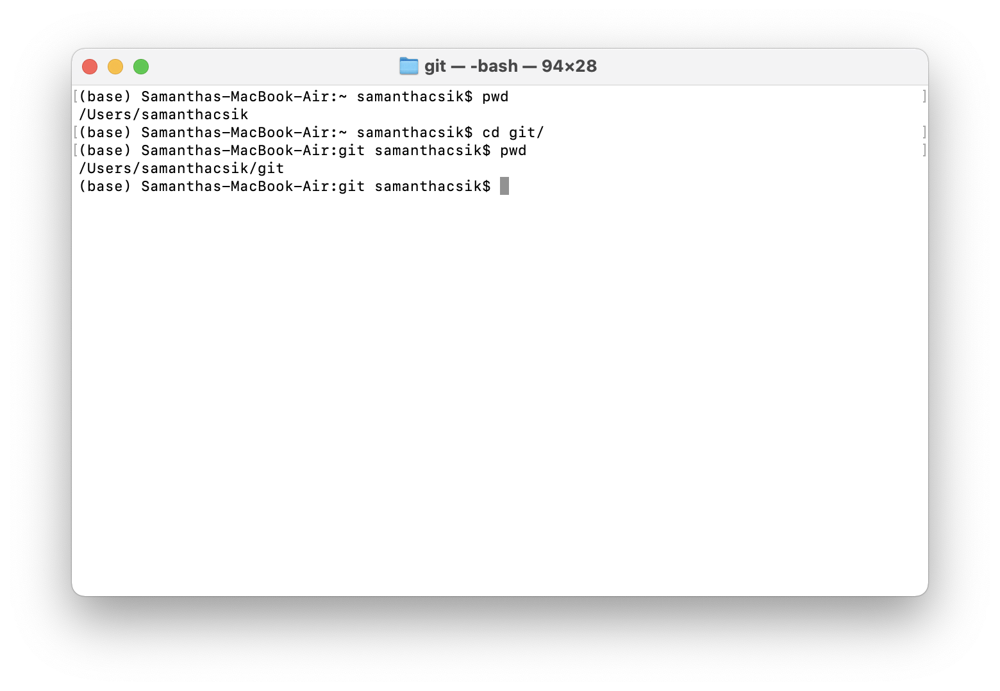
pwd om jouw huidige werkmap te zien. Gebruik cd om de directorie te veranderen.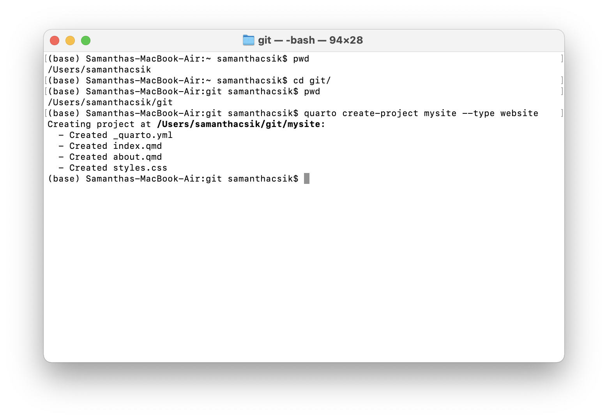
quarto create-project your_project_name --type website commando’s.- Als jij
cdin jouw nieuwemysitedirectory plaatst (of hoe jij je quarto project ook genoemd hebt) en hetlscommando gebruikt om de inhoud van die directory op te vragen, zou je een serie bestanden moeten zien (_quarto.yml,about.qmd,index.qmd,styles.css) die de basis voor jouw website vormen. Bijvoorbeeld:
# print current working directory
(base) Samanthas-MacBook-Air:git samanthacsik$ pwd
/Users/samanthacsik/git
# move into `mysite` directory
(base) Samanthas-MacBook-Air:git samanthacsik$ cd mysite/
(base) Samanthas-MacBook-Air:mysite samanthacsik$
# list out all files in the `mysite` directory
(base) Samanthas-MacBook-Air:mysite samanthacsik$ ls
_quarto.yml _site about.qmd index.qmd styles.css- Je kunt ook Finder (Mac) of Windows Explorer (Windows) gebruiken om jouw nieuwe directorie en bestanden te zien.
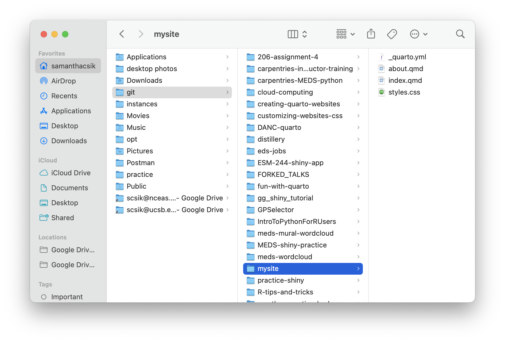
- Je kunt een voorbeeld van je eenvoudige, maar functionele website rechtstreeks vanaf de terminal bekijken door het volgende te typen:
quarto preview mysite- De voorvertoning van je site wordt nu geopend in je browser. Verlaat de preview door
control+Cop te geven.
Important
Je moet het pad naar jouw websitemap opgeven als je een voorbeeld wilt bekijken vanaf een andere locatie. Bijvoorbeeld, als mijn Quarto website directory op User/samanthacsik/git/mysite staat, maar ik ben één directory hoger in User/samanthacsik/git, dan kan ik quarto preview mysite uitvoeren. Als alternatief kan ik het volledige pad quarto preview User/samanthacsik/git/mysite of het relatieve pad quarto preview ~/git/mysite geven, ongeacht in welke map ik me op dat moment bevind.
- Tot nu toe heb je een map aangemaakt, maar die wordt nog niet gevolgd door git. Zorg er eerst voor dat je met
cdde websitemap kiest. Vervolgens initialiseer je deze map als een git-repository met hetgit initcommando in het terminal venster.
git init- Laten we nu de naam van onze standaard branch controleren – dat is de branch waar alle wijzigingen uiteindelijk in worden samengevoegd (als je een website bouwt, is dit meestal de branch die je wilt implementeren). Typ
git statusin je Terminal venster. Je zou iets moeten zien dat hier op lijkt, waarbij de eerste regel je vertelt op welke branch je momenteel zit:
(base) Samanthas-MacBook-Air:mysite samanthacsik$ git status
On branch master
No commits yet
Untracked files:
(use "git add <file>..." to include in what will be committed)
.quarto/
_quarto.yml
_site/
about.qmd
index.qmd
styles.css
nothing added to commit but untracked files present (use "git add" to track)
Note
git status is een super handig commando dat de status van jouw werkmap en staging gebied laat zien. Ik gebruik dit commando vaak als ik met de terminal werk om te controleren of ik echt ben waar ik denk dat ik ben en om de opgegeven, nog niet opgegeven of gewijzigde bestanden te zien. Het is een goede gewoonte om git status te draaien na het wisselen van branch of voor/na het toevoegen van bestanden om te committen.
- Als jouw huidige branch
masterheet, volg dan stap 7 hieronder om de naam naarmainte updaten. Waarom? De racistische “master” terminologie voor ‘git branches’ motiveert ons om de default branch naar “main” om te zetten. Als jouw branch almainheet, kun je rechtstreeks naar stap 8 gaan.
Note
Als je eerst een repo in GitHub eerst hebt gemaakt, de standaard is nu geupdate om er de default branch main van te maken. Echter, als je eerst een lokale git repository hebt gemaakt (zoals we hier hebben gedaan) kan het zijn dat jij jouw default branch main hebt genoemd (afhankelijke van de Git-versie en de configuratie-settings die jij hebt).
- Laten we onze standaard branch naam van
masternaarmainoverzetten. Kies jouw workflow gebaseerd op jouw Git versie (controleer jouw versie metgit --versionin jouw Terminal):
Je kunt de standaard branch bijwerken naar main door de volgende regel in het Terminalvenster in te tikken:
git config --global init.defaultBranch mainDit stelt de standaard branchnaam in op main voor alle nieuwe repositories die je aanmaakt (het hernoemt geen branches in bestaande projecten).
Je kunt controleren dat dit werkte door het git status commando opnieuw in te typen. De eerste afgedrukte regel zou nu On branch main moeten zijn.
Important
Houd er rekening mee dat je werkproces voor het updaten van master naar main er anders uit zal zien als je al zowel een lokale git repo (eerst) EN een upstream remote i.e. GitHub repo (tweede) hebt gemaakt. Kijk naar deze post voor meer info.
Hernoem de standaard branch main door de volgende regel in het Terminal venster uit te voeren:
git branch -m master mainDe-m toevoeging wordt gebruikt om jouw branch te hernoemen zonder de branch geschiedenis te beïnvloeden.
Dit zet de default branch naam op main ALLEEN voor deze repository (dus je zult dit moeten doen met alle nieuwe lokale git repositories die je aanmaakt).
Je kunt controleren of dit werkt door het git status commando opnieuw in te typen. De eerste afgedrukte regel zou nu moeten luiden, On branch main.
- Voeg de bestanden toe in je
mysitemap (analoog aan het aanvinken van de vakjes naast je bestanden in de RStudio Git tab)…
# dit voegt alle niet gevolgde of gewijzigde bestanden in één keer toe
git add .
# als alternatief kun je alle files individueel toevoegen
git add <file_name>
Tip
Gebruik het git status commando opnieuw om te zien of je bestanden succesvol zijn toegevoegd voordat je ze vastlegt – alle niet gevolgde of gewijzigde bestanden die eerst in rood werden afgedrukt zouden nu in groen moeten verschijnen.
..en ‘commit’ ze (leg ze vast() (analoog aan het drukken op de knop “Vastleggen” in RStudio en het typen van je commitbericht in het pop-up venster)
git commit -m "initial commit"- Op dit punt heb je een lokale Git repository gemaakt die de basisbestanden bevat die nodig zijn om je Quarto website te bouwen. Nu moeten we een “remote” repository maken (dat wil zeggen een versie van je project die gehost wordt op het internet) op GitHub. Er zijn meerdere manieren om dit te doen, maar we zullen de werkwijze behandelen die voor mij het meest intuïtief werkt. Open/log in op GitHub en [maak een nieuwe repository].(https://docs.github.com/en/repositories/creating-and-managing-repositories/creating-a-new-repository).
Git vs. Github:
Git is een versiebeheersysteem waarmee je de geschiedenis van versiebeheer van je bestanden kunt beheren en bijhouden, terwijl GitHub een cloud-gebaseerde hostingdienst is waarmee je Git repositories kunt beheren. Zoals Jenny Bryan beschrijft in haar boek Happy Git and GitHub for the useR, hosting diensten zoals GitHub “bieden een thuis voor je Git-gebaseerde projecten op het internet.” Deze diensten helpen niet alleen om samenwerking te vergemakkelijken, maar ze beschermen je ook in het geval dat je computer plotseling kapot gaat – “kloon” gewoon je GitHub repository terug naar je nieuwe computer en voila! Je kunt meteen verder waar je gebleven was.
Niet initialiseren met een README, license, of
.gitignore bestanden!
Doe dit niet als je je nieuwe GitHub repo aanmaakt om fouten te voorkomen. Je kunt deze toevoegen nadat je project gepushed is.
- Kopieer de URL van de externe opslagplaats (bovenaan de pagina Snelle installatie) naar je klembord.
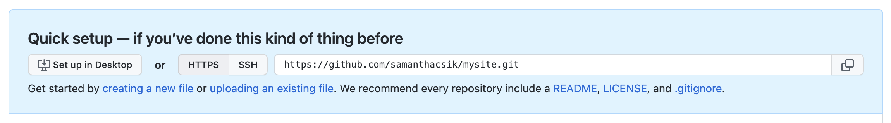
- Voeg in Terminal de URL toe voor het externe archief waar je lokale archief naartoe gepusht zal worden:
# stel de nieuwe remote in met de URL van je GitHub repo
git remote add origin <REMOTE_URL>
# controleer of de nieuwe URL op afstand correct is (dit drukt gewoon de URL af die je hebt toegevoegd)
git remote -v- Push de wijzigingen in je lokale repository naar je remote repository op GitHub:
git push -u origin main- Als het lukt, zou je iets moeten zien dat lijkt op wat je hieronder ziet!
(base) Samanthas-MacBook-Air:mysite samanthacsik$ git push -u origin main
Enumerating objects: 33, done.
Counting objects: 100% (33/33), done.
Delta compression using up to 8 threads
Compressing objects: 100% (29/29), done.
Writing objects: 100% (33/33), 273.20 KiB | 13.66 MiB/s, done.
Total 33 (delta 1), reused 0 (delta 0), pack-reused 0
remote: Resolving deltas: 100% (1/1), done.
To https://github.com/samanthacsik/mysite.git
* [new branch] main -> main
Branch 'main' set up to track remote branch 'main' from 'origin'.
(base) Samanthas-MacBook-Air:mysite samanthacsik$ - Ververs je GitHub repository (in je web browser) om te zien dat je updates succesvol gepushed zijn!
Maak een Quarto website binnen een bestaande GitHub repository
De bovenstaande instructies volgen de “maak eerst een lokaal R project (en initialiseer als een git repo) > maak als tweede een upstream remote repo (op GitHub)” werkwijze. Als je echter al een remote GitHub repository hebt die je voor je website wilt gebruiken, kloon dan de GitHub repo, en voer het volgende commando in je terminal uit:
quarto create-project --type websiteDit voegt de standaard bestanden toe (_quarto.yml, .gitignore, index.qmd, about.qmd, styles.css) om aan de slag te gaan met je website. Je kunt deze aanpak ook gebruiken als je al een bestaande lokale directory met documenten of een R project hebt dat je wilt gebruiken als de directory voor je website. Navigeer eerst naar die directory/open dat R project en voer dan het bovenstaande commando uit in je terminal.
Waarom RStudio gebruiken om jouw website op te zetten?
- Het is super eenvoudig om dit te doen met een klik op slechts een paar knoppen! Onthoud, de commando’s die we intypen in ons terminalvenster (zoals hiervoor beschreven) liggen ten grondslag aan de knoppen waarop we klikken in de RStudio IDE – RStudio biedt gewoon een gebruiksvriendelijke interface voor het uitvoeren van die commando’s.
Stappen:
- Open RStudio en klik op de knop 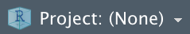 knop in de rechterbovenhoek. Selecteer: New Project…
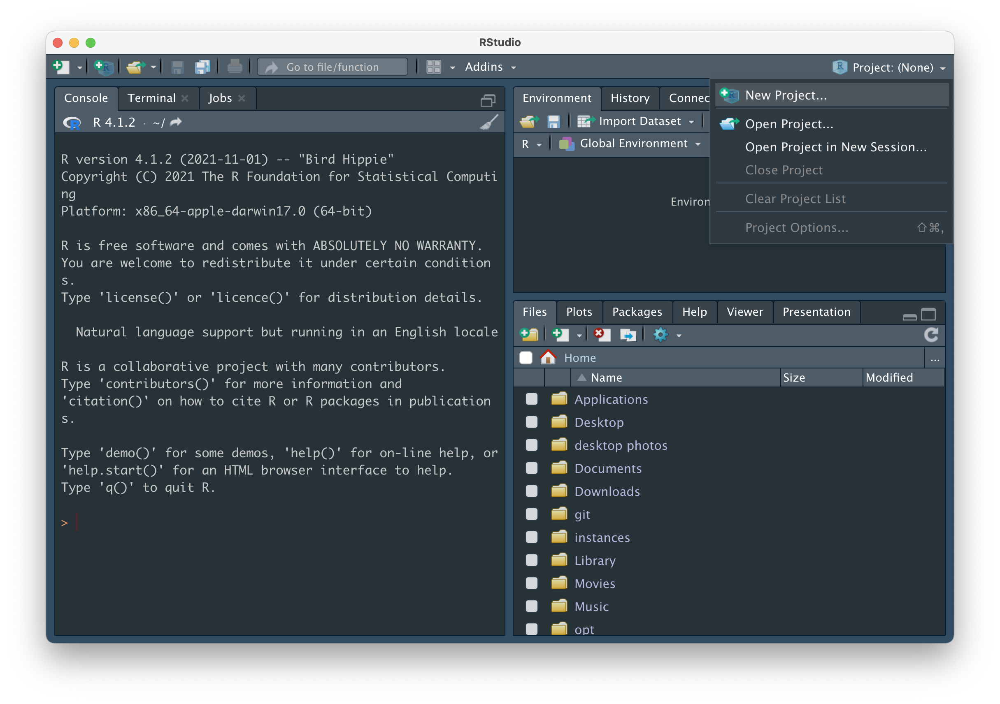
- Klik op New Directory, dan Quarto Website
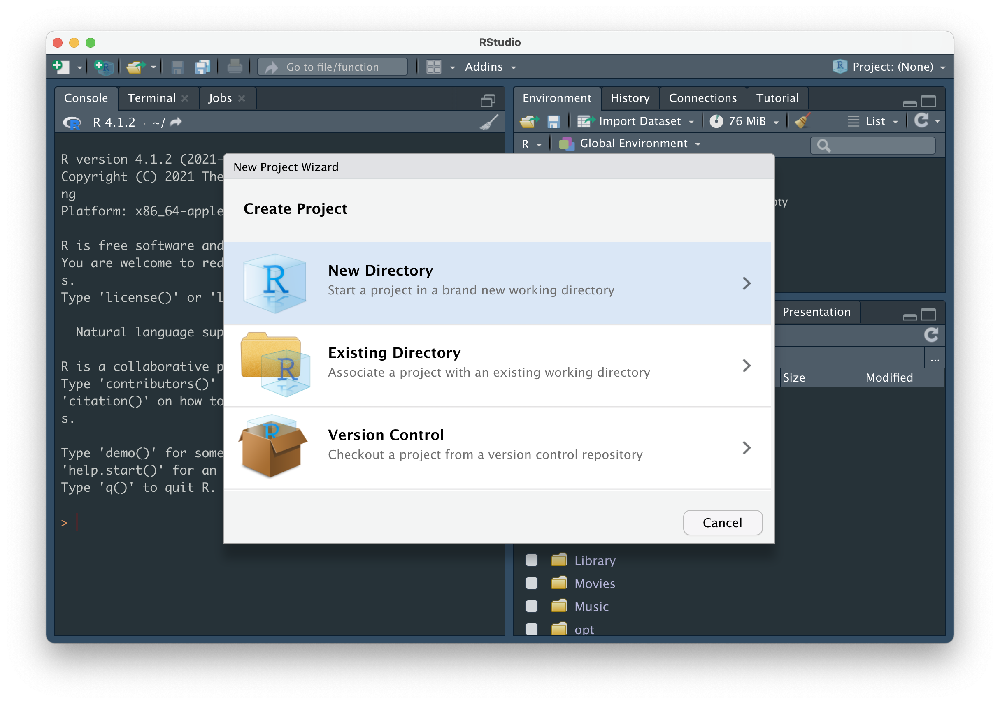
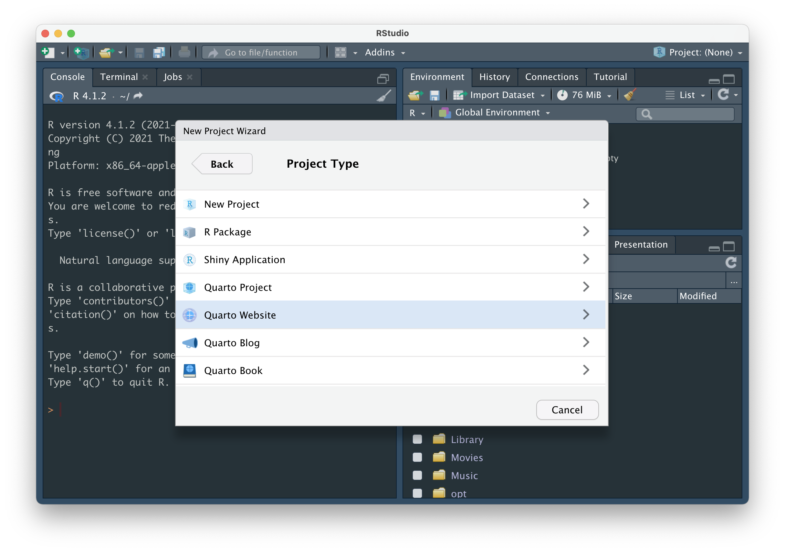
- Vul het Directory name: veld in (dit is de naam van jouw R project en uiteindelijk de naam van jouw GitHub repo) en kies waar je je directory wilt opslaan met de Browse knop. Klik op Create Project.
Noem jouw project jouwgebruikersnaam.github.io als je van plan bent om GitHub-pages te gaan gebruiken. Omdat we GitHub pagina’s gaan gebruiken om onze websites te publiceren/hosten, wordt dat aanbevolen (je mag één gebruikerswebsite aanmaken met het github. io suffix) – bijvoorbeeld, het project/GitHub repository, dat de code bevat voor mijn persoonlijke website, heet samanthacsik.github.io. Geef het anders een redelijke naam (dit wordt de slug voor je site als je met GitHub pagina’s publiceert, dus kies zorgvuldig). Ik noem mijn project mysite alleen voor instructiedoeleinden – je zou het jouwe zeker een meer praktische/creatieve naam moeten geven.
Organiseren van R projecten / git repositories
Er zijn veel verschillende meningen over hoe je je R projecten/git repositories moet organiseren op je computer. Persoonlijk sla ik al mijn projecten op in een map genaamd git in de thuismap van mijn computer (bijvoorbeeld Users/samanthacsik/git/) zodat alles op één plek staat.
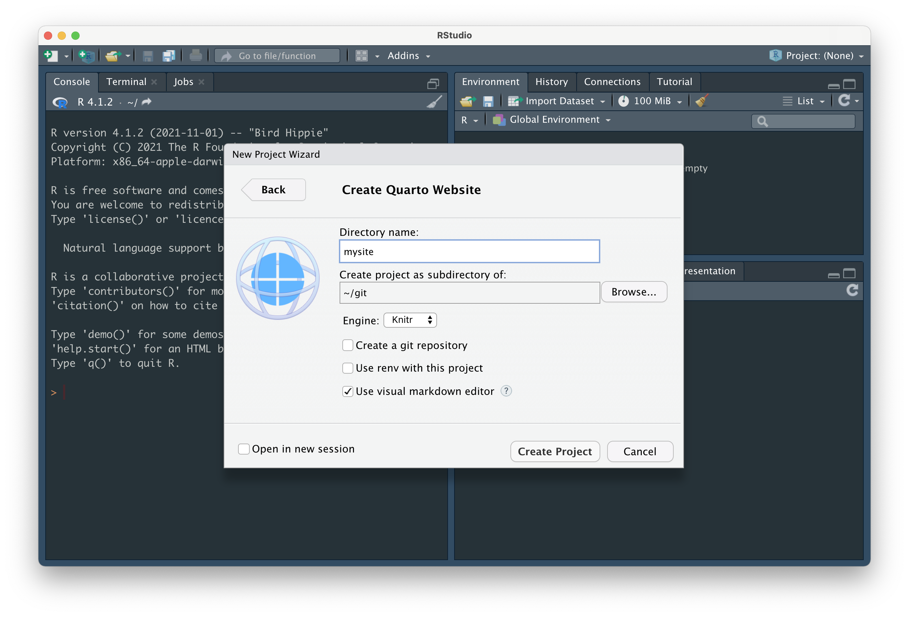
- Je zou nu een map moeten zien met de naam
mysite(of hoe u uw Quarto project ook genoemd heeft) met een serie bestanden (_quarto.yml,about.qmd,index.qmd,styles.css) die de steiger vormen voor jouw website in het Files tabblad (in het paneel rechtsonder in RStudio, als u de indeling van het deelvenster niet veranderd heeft).
- Je hebt nu een map gemaakt met de website-basisbestanden, maar het wordt nog niet gevolgd door git, noch is het verbonden met een remote repository op GitHub. Om dit op te zetten, installeer je eerst het
{usethis}pakket als je dat nog niet hebt.
install.packages("usethis")- Voer in de Console (terwijl je in je website project in RStudio zit)
usethis::use_git()uit om een lokale git repo aan te maken. Kies ja als je wordt gevraagd of het goed is om ongecommitteerde bestanden vast te leggen. Als gevraagd wordt om R opnieuw te starten, kies dan ja. Eenmaal klaar zou je het Git tabblad moeten zien verschijnen in je linker bovenvenster in RStudio.
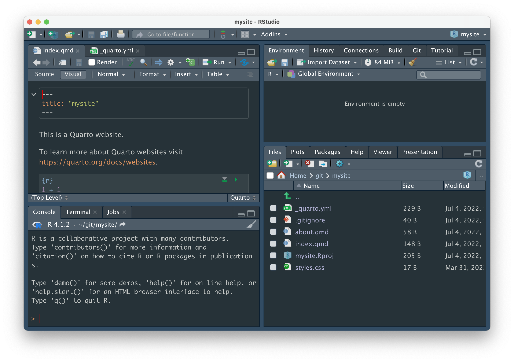
{usethis} is een pakket dat interactieve workflows faciliteert voor het maken en ontwikkelen van R projecten. We gebruiken de {usethis} workflow hier omdat het een super handig pakket is om te beginnen met het leren voor het opzetten van projecten. Echter, in plaats van de usethis::use_git() functie hier te gebruiken om je lokale git repo aan te maken, had je ook het vakje kunnen aanvinken waar staat Create a git repository bij het opzetten van je Quarto website (zie stap 3 hierboven).
- Voer dan in de Console
usethis::use_github()uit om een upstream remote repository aan te maken (d.w.z. GitHub repo). Jouw web browser zou moeten openen naar je nieuwe GitHub repository, met dezelfde naam als je lokale git repo/R project.
Git vs. Github
Git is een versiebeheersysteem waarmee je de geschiedenis van versiebeheer van jouw bestanden kunt beheren en bijhouden, terwijl GitHub een cloud-gebaseerde hostingdienst is waarmee je Git repositories kunt beheren. Zoals Jenny Bryan beschrijft in haar boek Happy Git and GitHub for the useR, hosting diensten zoals GitHub “bieden een thuis voor jouw Git-gebaseerde projecten op het internet.” Deze diensten helpen niet alleen om samenwerking te vergemakkelijken, maar ze beschermen je ook in het geval dat je computer plotseling kapot gaat – “kloon” gewoon je GitHub repository terug naar je nieuwe computer en voila! Je kunt meteen verder waar je gebleven was.
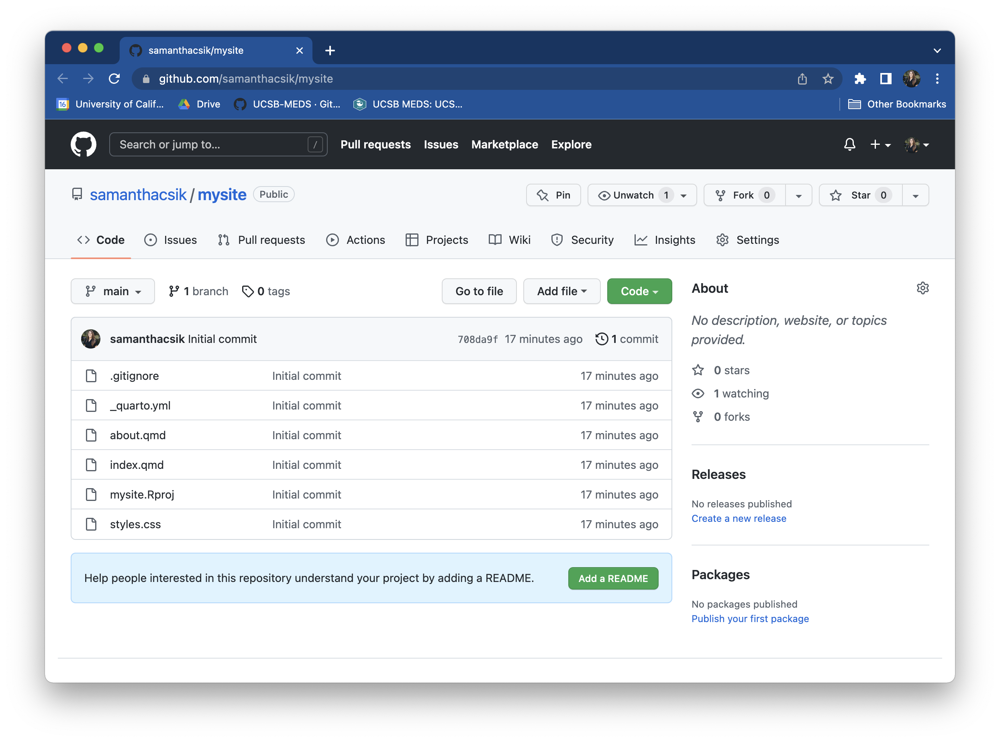
usethis::use_github() your browser window should open up to your new GitHub repository and look similar to the browser above.Laten we vervolgens de naam van onze standaard branch controleren – dat is de branch waar alle wijzigingen uiteindelijk in worden samengevoegd (als je een website bouwt, is dit meestal de branch die je wilt implementeren). Er zijn meerdere manieren om dit te controleren – hier zijn twee eenvoudige opties:
open je Terminal-venster vanuit RStudio en typ
git status– de eerste regel die verschijnt moet zijn `Op branch`` .klik op de Git tab in het rechter bovenvenster van RStudio. Naast de 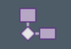 symbool, je zou een dropdown menu moeten zien met de naam van je huidige tak.
- Als je huidige branch
masterheet, volg dan stap 8 hieronder. Waarom? De racistische “master” terminologie voor git branches motiveert ons om onze standaard branch te updaten naar “main”. Als je branchmainheet, dan kun je aan de slag! Je kunt doorgaan naar het volgende gedeelte, Publiceer je site met GitHub Pages.
De volgorde van handelen kan bepalen of je standaard branch
main of master heet Als je eerst een repo aanmaakt in GitHub, dan is de standaard nu bijgewerkt om de standaard branch main te maken. Maar, als je eerst een lokale git repository maakt (zoals we hier gedaan hebben), dan moet je misschien je standaard branchnaam bijwerken naar main (afhankelijk van je versie van Git en de configuratie-instellingen).
- Laten we onze standaard branchnaam veranderen van
masternaarmain. Voer in de consoleusethis::git_default_branch_rename(from = "master", to = "main")uit om je standaard branchnaam te updaten. Bevestig dat het (a) lokaal bijgewerkt is door opnieuwgit statusin je Terminal uit te voeren – de eerste afgedrukte regel zou nu moeten luiden,Op branch main, en (b) op je remote door je GitHub repo te verversen (in je web browser) – je zou de bijgewerkte standaard branchnaam bovenaan je repo moeten zien.
Maak een Quarto website binnen een bestaande GitHub repository
De bovenstaande instructies volgen de “maak eerst een lokaal R project (en initialiseer als een git repo) > maak als tweede een upstream remote repo (op GitHub)” werkwijze. Als je echter al een remote GitHub repository hebt die je voor je website wilt gebruiken, kloon dan de GitHub repo, en voer het volgende commando in je terminal uit:
quarto create-project --type websiteDit voegt de standaard bestanden toe (_quarto.yml, .gitignore, index.qmd, about.qmd, styles.css) om aan de slag te gaan met je website. Je kunt deze aanpak ook gebruiken als je al een bestaande lokale directory met documenten of een R project hebt dat je wilt gebruiken als de directory voor je website. Navigeer eerst naar die directory/open dat R project en voer dan het bovenstaande commando uit in je terminal.
Jouw site bouwen & publiceren met GitHub Pages
Er zijn veel opties om je website te publiceren. Wij zullen de GitHub Pages-optie gebruiken, waarmee je een website vanuit elke GitHub repository kunt publiceren. Om dit te doen, zijn er een paar configuratiestappen:
- Maak een bestand met de naam
.nojekyllin je repository, wat nodig is om sommige bewerkingen van HTML bestanden uit te schakelen die GitHub standaard doet. Doe dit vanuit je terminal (je kunt de terminal tab in RStudio gebruiken of een apart terminal venster – zorg ervoor dat je in de juiste directory zit) met het volgende commando:
touch .nojekyll
Note
The touch command creates a new, empty file.
.nojekyll is een verborgen bestand dat niet zichtbaar in jouw map staat. Je zou het moeten zien verschijnen als een bestand om te volgen met git onder de Git tab in RStudio. Je kunt verborgen bestanden ook bekijken in Finder (Mac) met de sneltoets Command + Shift + ., of volg deze instructies voor Windows 10, 8.1, en 7.
- Zet de
output-dirin jouw_quarto.ymlfile op “docs” (dat kun je het makkelijkste doen vanuit RStudio):
---
project:
type: website
output-dir: docs
# ~ additional metadata excluded for brevity ~
---
Note
De output-dir is de map waar jouw gerenderde .html (en andere belangrijke) bestanden automatisch worden opgeslagen wanneer jij jouw website “bouwt” (zie de volgende stap!) – dat wil zeggen, wanneer je al je .qmd bestanden omzet naar de .html bestanden die jouw webbrowser kan interpreteren/weergeven.
- Maak jouw site door te klikken op de tab Build (kwadrant rechtsboven in RStudio) en vervolgens op Render Website. Je zou een minimale, zij het functionele, website moeten zien verschijnen in de tab Viewer. Klik op de 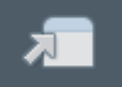 knop om je bestand te openen in je webbrowser. Noot: je website wordt momenteel gehost op je lokale machine, niet op een doorzoekbare URL. Maar dat komt binnenkort wel!
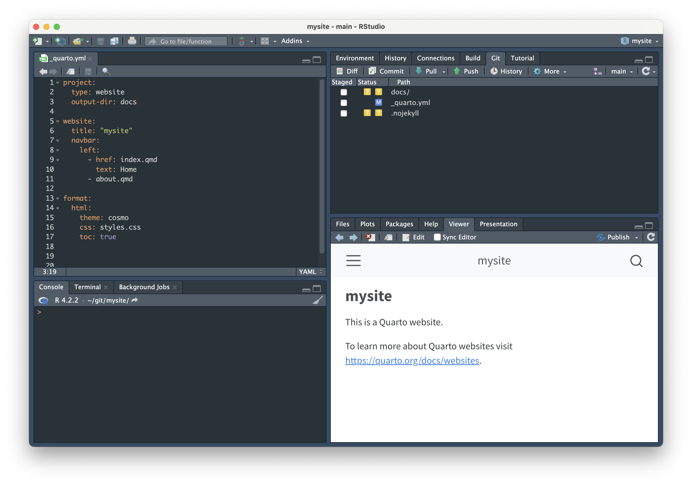
Nu moeten we alle bestanden in onze lokale git repository naar onze remote GitHub repository sturen:
- Stage jouw bestanden door alle vakjes in de Git tab aan te vinken (dit is analoog aan het
git add .commando dat in de Terminal wordt gebruikt om alle bestanden te stagen) - commit jouw bestanden door op de commit knop te klikken, een commit bericht toe te voegen en op “commit” te klikken (analoog aan
git commit -m "my commit message") - Push jouw bestanden naar de remote repository (op GitHub) door op de “Push” knop met de groene naar boven gerichte pijl te klikken (analoog aan
git push).
- Stage jouw bestanden door alle vakjes in de Git tab aan te vinken (dit is analoog aan het
Configureer GitHub pagina’s om inhoud van de “docs” map te serveren door te klikken op de Settings tab in de bovenste menubalk, dan Pages tab in de linker menubalk. Zorg ervoor dat Branch is ingesteld op
mainen dat de geselecteerde map is ingesteld op/docs. Klik op “Save”. Eenmaal uitgerold (dit kan een paar minuten duren), zal de URL van je website verschijnen in een box bovenaan de pagina (het kan zijn dat je een paar keer moet proberen te vernieuwen).
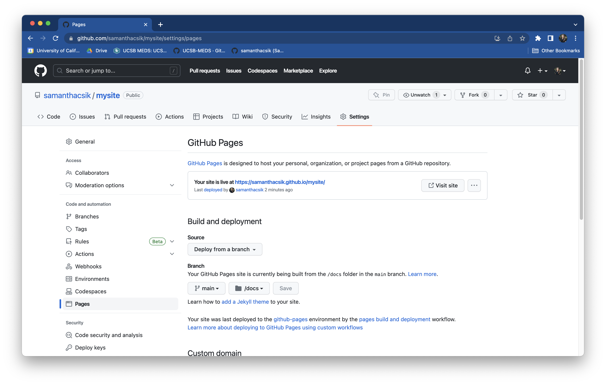
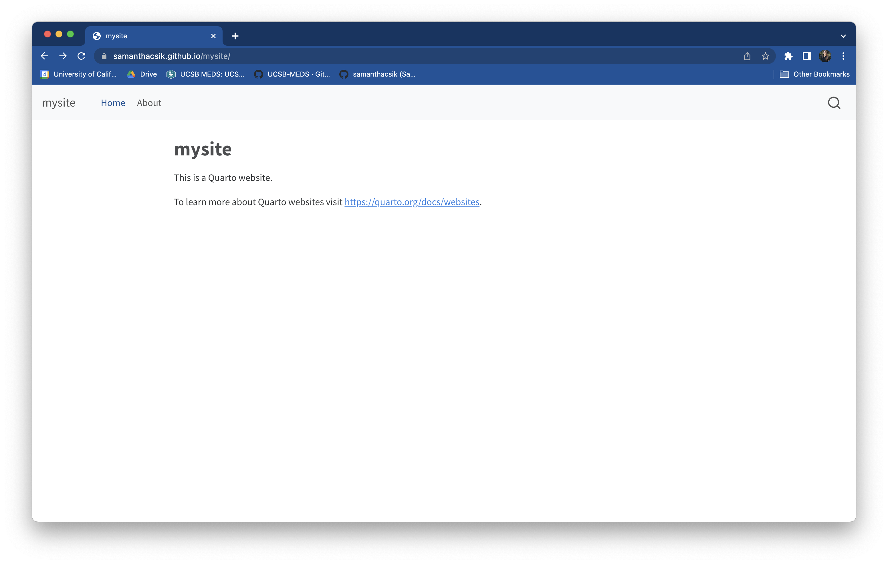
Bekijk de Actions tab op GitHub om de deployment status te bekijken. Zie de deployment status, de tijd van elke deployment, en hoe lang het duurde om elke run te deployen. Je kunt hier ook mislukte implementaties vinden (ja, dat gebeurt soms) en actie ondernemen om ze te repareren.
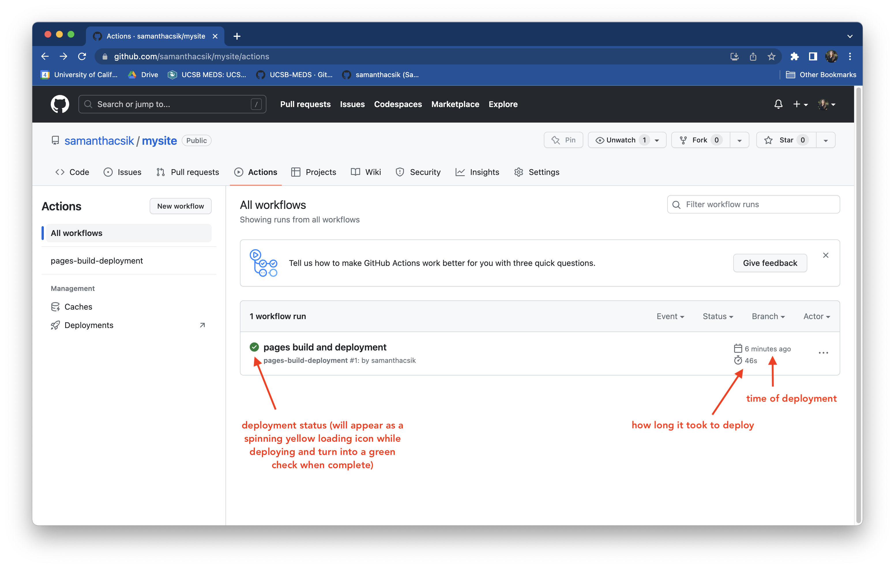
Waar moet ik beginnen om zaken te veranderen?
Op dit moment is onze website gebouwd met de standaardstyling van Quarto. Laten we eens kijken waar dingen staan en hoe we kunnen beginnen met het aanpassen van sommige dingen.
Knoei niet met dingen in /docs
Wanneer jij jouw site rendert (door te klikken op Build > Render Website), neemt Quarto al je .qmd bestanden, converteert ze naar .html bestanden (samen met wat andere belangrijke dingen) en slaat alles op in jouw /docs map. Jouw site wordt vanuit deze map geïnstalleerd, dus je wilt hier echt niets direct veranderen.
Inhoud toevoegen aan jouw basispagina (index.qmd)
Onthoud: index.qmd is de pagina waarop mensen terechtkomen als ze naar jouw website navigeren – geef deze basispagina/homepage een opknapbeurt door een aantal van de volgende dingen uit te proberen:
Werk de yaml
titelin jeindex.qmdbestand bij. Hier heb ik de mijne veranderd van “mysite” naar mijn naam, “Samantha Csik”Verwijder de voorbeeldtekst en begin met het toevoegen van jouw eigen inhoud – een goede plek om te beginnen is een korte beschrijving waarin je jezelf voorstelt!
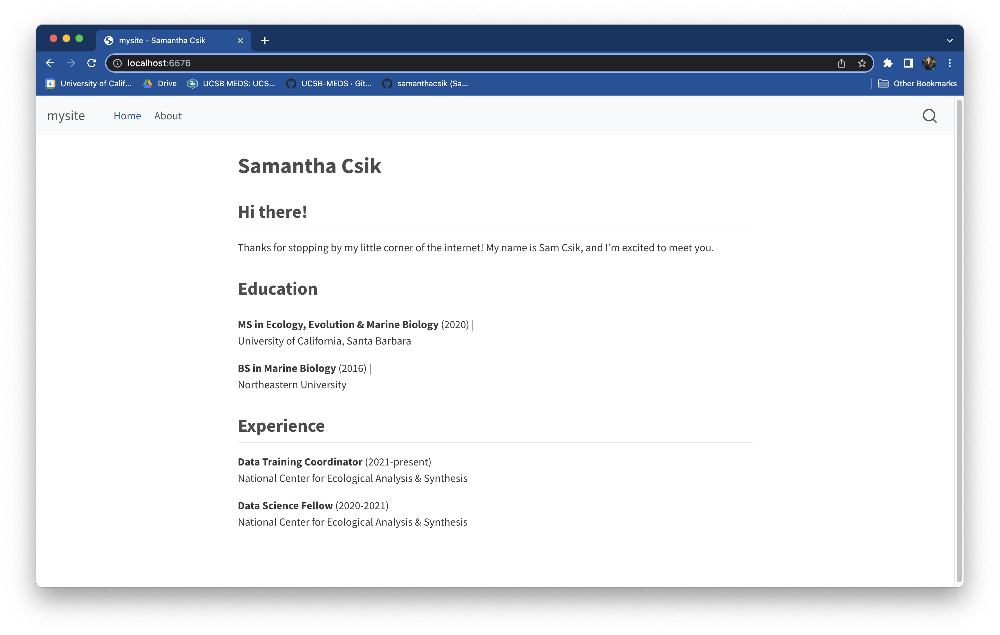
Maak van jouw basispagina (index.qmd) een “Over Pagina” met een foto
Wanneer de over optie is toegevoegd aan de yaml van een document, wordt een speciaal sjabloon gebruikt om de inhoud van die pagina op te maken. Kies uit een van Quarto’s vijf [ingebouwde sjablonen] (https://quarto.org/docs/websites/website-about.html#templates), elk met een iets andere opmaakstijl. Enkele yaml opties om mee te spelen:
template: kies uit Quarto’s ingebouwde templateopties;image(merk op dat dit een optie is op documentniveau, dus geen sub-item vanover): geef het bestandspad naar je foto opimage-width&image-shape: pas de grootte en vorm van je afbeelding aan (round,rounded,rectangle)links: knoppen toevoegen met links naar je sociale mediapagina’s
index.qmd
---
title: "Samantha Csik"
1image: headshot.jpg
about:
2 template: trestles
3 image-shape: round
image-width: 23em
4 links:
- text: LinkedIn
href: https://www.linkedin.com/in/samanthacsik/
- text: Twitter
href: https://twitter.com/SamanthaCsik
- text: GitHub
href: https://github.com/samanthacsik
- text: Email
href: mailto:scsik@ucsb.edu
---
# pagina-inhoud weggelaten voor beknoptheid ~- 1
-
voeg een foto toe door een bestandspad en afbeeldingsnaam op te geven (hier staat
headshot.jpgin de hoofdmap van mijn repo).
- 2
-
gebruik een vooraf gebouwd sjabloon (hier,
trestles) om de lay-out van je basispagina (of welke pagina dan ook!) bij te werken
- 3
-
stel de afbeeldingsvorm in (
rond,afgerond,rechthoek) & de grootte
- 4
-
voeg button links toe naar je favoriete social media pagina’s (bijv. LinkedIn, Twitter, GitHub, en zelfs je email – Noot: de
mailto::voor je email adres,mailto::youremail.com)
Aardigheidje: Installeer de Font Awesome Extension for Quarto om gratis Font Awesome pictogrammen aan jouw site toe te voegen! Zorg ervoor dat je de icon optie bekijkt wanneer u gekoppelde knoppen toevoegt aan uw Over pagina.
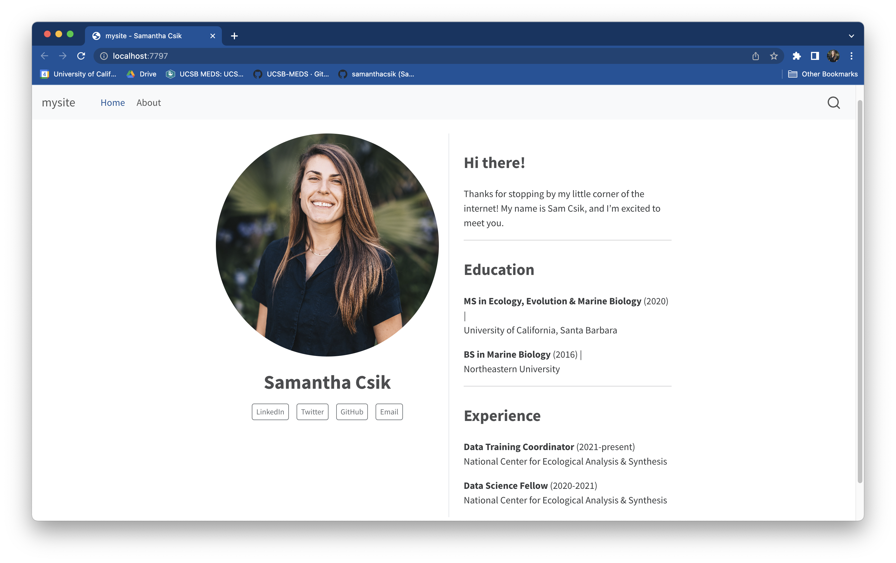
trestles sjabloon, het toevoegen van een afbeelding en gekoppelde knoppen. (Aantekening: Het gebruik van drie streepjes, ---, creëert een paginascheiding, zoals te zien is tussen secties in de schermafbeelding hierboven). Al met al een grote verbetering! Onze tekst is echter een beetje geplet in het midden van de pagina – dat lossen we in de volgende stap op.
Quarto ondersteunt het maken van volledig aangepaste pagina-lay-outs – maar ik raad aan om bij een template te blijven als je begint. Quarto’s ingebouwde Over Pagina templates zijn geweldig om een paar redenen, voornamelijk:
- ze bieden een snelle en gemakkelijke manier om visueel aantrekkelijke webpagina’s te maken (met name website basispagina’s).
- ze zorgen voor veel van de lastige “onder de motorkap” styling (bijvoorbeeld het creëren van “responsive” pagina-elementen, d.w.z. automatisch de inhoud herschikken om te passen bij veranderende viewport-formaten) die anders een behoorlijke dosis CSS kennis zou vereisen. Bijvoorbeeld het maken van “responsieve” pagina-elementen.
Naarmate u meer vertrouwd raakt met het Quarto raamwerk en CSS voor het stylen van webpagina’s (we leren hier allicht meer over in een latere blog), kunt je besluiten om een volledig aangepaste webpagina lay-out te maken. U kunt de Quarto documentatie bekijken voor meer informatie.
Wijzig het uiterlijk van de website in _quarto.yml
Het bestand _quarto.yml is een configuratiebestand – elk document dat wordt gerenderd in de projectmap zal automatisch de metadata erven die in dit bestand zijn gedefinieerd. Enkele eenvoudige updates die een groot verschil maken:
_quarto.yml
- 1
-
Geef jouw website een betere titel (bijv. jouw naam)! Dit is de tekst die in de linkerbovenhoek van je website verschijnt (standaard is dit de naam van je repo) – als je erop klikt, wordt een gebruiker teruggebracht naar de basisagina.
- 2
-
Stel je
page-layoutin opfullzodat je pagina-inhoud een groter deel van de paginabreedte in beslag neemt
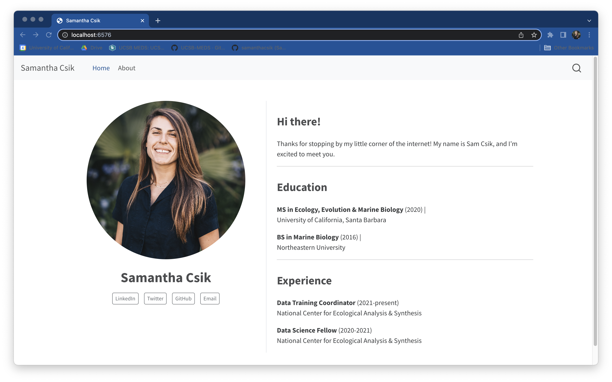
page-layout ingesteld op full, zodat de inhoud niet zo geplet in het midden van de pagina verschijnt.Voeg meer pagina’s toe aan jouw website
In het standaard Quarto website skelet, zijn er twee items in de navbar die verschijnen als “Home” en “Over” (Noot: verwar de speciaal opgemaakte “Over pagina” die we hebben gemaakt in index.qmd niet met de navbar pagina met de huidige titel “Over”). Deze navbar tabs linken naar twee .html bestanden (index.html en about.html) en worden automatisch gerenderd wanneer je naar /docs bouwt (je hoeft ze dus niet handmatig te knopen om de html te maken). Het toevoegen van een nieuwe pagina aan je website vereist twee stappen:
a. Maak een nieuw .qmd bestand (New File > Quarto Document en sla het op in de hoofdmap van je project) en voeg de inhoud toe die je op die pagina wilt hebben. Hier maak ik een nieuwe pagina genaamd “Al mijn favoriete bronnen!” en sla het op in mijn hoofdmap als resources.qmd. b. Update _quarto.yml door je nieuwe .qmd toe te voegen aan de lijst van navbar pagina’s. Het _quarto.yml bestand van mijn website ziet er nu zo uit:
_quarto.yml
project:
type: website
output-dir: docs
website:
title: "Samantha Csik"
navbar:
background: primary
left:
- href: index.qmd
text: Home
- about.qmd
1 - resources.qmd
format:
html:
theme: cosmo
css: styles.css
editor: visual- 1
-
Een nieuw toegevoegde navbarpagina. Noot: De naam van de pagina, zoals die verschijnt in de navigatiebalk van jouw website, zal hetzelfde zijn als wat er staat in het
titleveld van de yaml van dat bestand. Ik heb bijvoorbeeldtitle: "Al mijn favoriete bronnen!"in de yaml vanresources.qmd– dit is hoe het zal verschijnen in de navigatiebalk van mijn website. Als je wilt dat de paginanaam anders wordt weergegeven in de navigatiebalk, gebruik dan dehrefentextopties samen (zie bijvoorbeeld hoeindex.qmdwordt weergegeven alsHomein de navigatiebalk van mijn website).
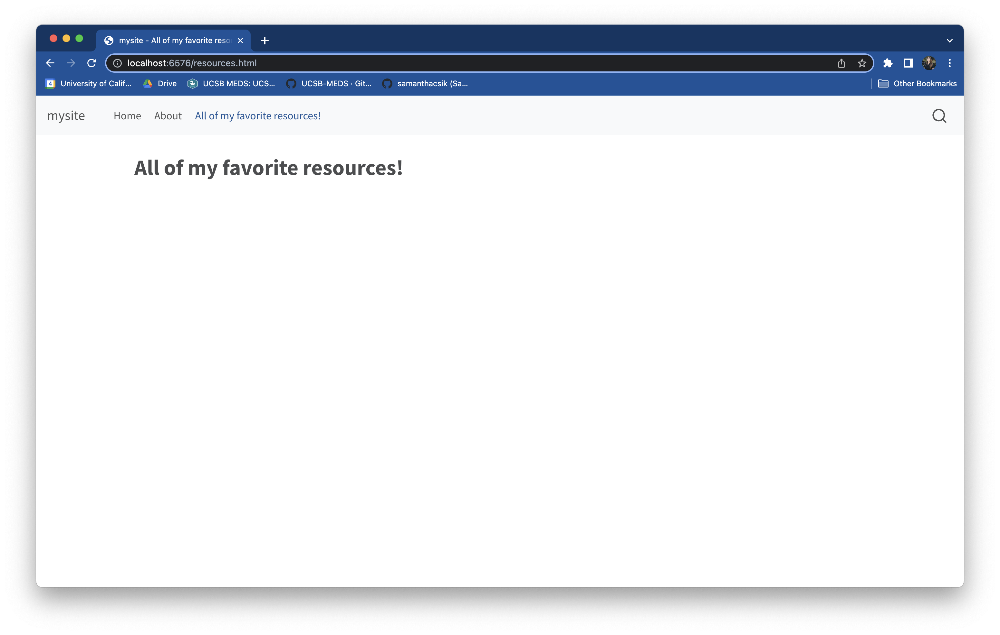
Verander het thema
Werk het uiterlijk van jouuw site bij door te kiezen uit een van de 25 voorgedefinieerde Bootswatch-thema’s. Standaard worden Quarto sites gebouwd met het cosmo thema. Geef slechts één themanaam op in de theme optie in uw _quarto.qmd bestand:
_quarto.yml
# ~ additional metadata excluded for brevity ~
# supplying just one theme ("minty")
format:
html:
theme: minty
css: styles.css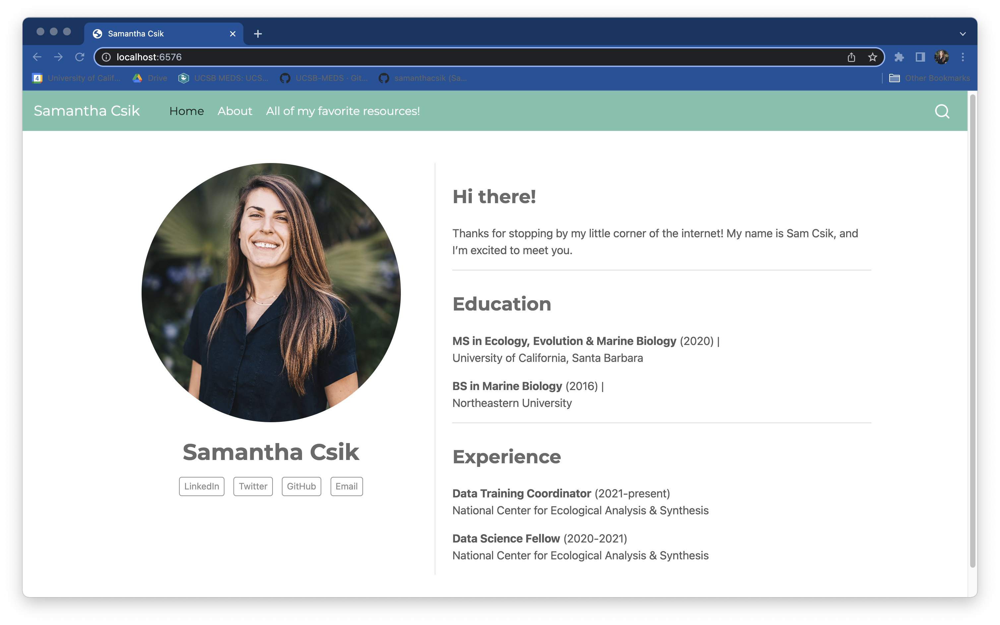
of zowel een donker als een licht thema leveren waar gebruikers tussen kunnen wisselen:
_quarto.yml
# ~ additional metadata excluded for brevity ~
# supplying a light ("minty") and dark ("slate") theme to toggle between
format:
html:
theme:
light: minty
dark: slate
css: styles.css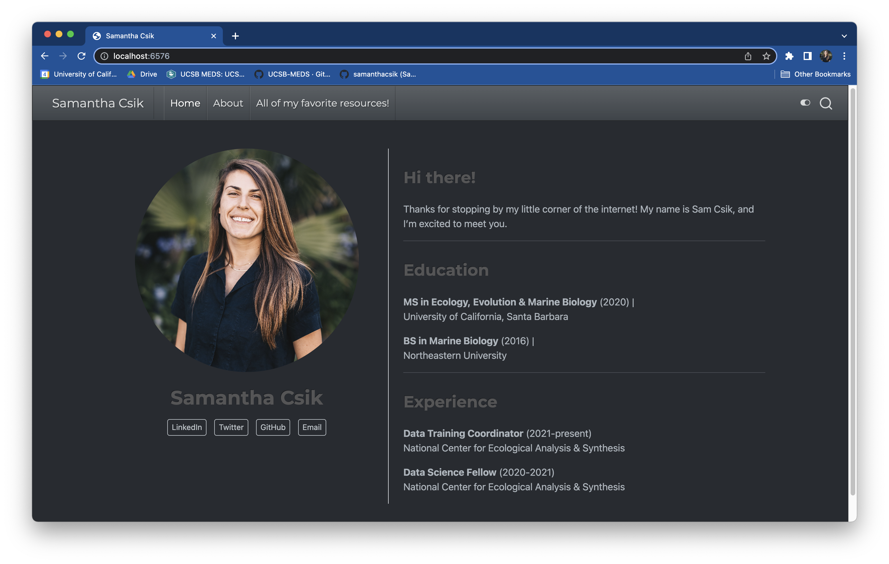
donkere thema, dat is ingesteld op het voorgebouwde Bootswatch thema thema, slate, ingeschakeld.
“Render Website” altijd voordat je veranderingen die je wilt uitrollen pushed! Je moet Render Website (onder de Build tab) voordat je toegevoegde/gewijzigde bestanden naar GitHub pushed als je die veranderingen bijgewerkt wilt zien op je site. Alleen individuele bestanden renderen zal niet werken.
Vooruit kijken
Je zou nu een basisversie van je website moeten hebben 🎉 Tijdens het herfstkwartaal leren de studenten van Sam hoe ze:
a. het uiterlijk van onze site aanpassen met Sass & CSS
b. een blog en blogberichten toevoegen aan onze websites
c. continu ontwikkelen van hun merk
Tegelijkertijd, kijk naar huidige student & alumni websites (Noot: MEDS klas van 2022 gebruikte {distill} pakket om hun websites te bouwen) voor inspiratie of duik in de Quarto Website documentatie als je nu aan de slag wilt met verdere aanpassingen.
Extra bronnen om je enthousiast te maken over Quarto
We don’t talk about Quarto, door Alison Hill | blog post
Reproducible Authoring with Quarto, door Mine Çetinkaya-Rundel | slides | recording
Hello Quarto! A Chat with NASA Openscapes, Co-Hosted door R-Ladies Santa Barbara | blog post | recording
rstudio::conf 2022 keynote, Hello Quarto, door Julie Lowndes and Mine Çetinkaya-Rundel | recording
Met dank aan
Veel van de geweldige inhoud en tips hier zijn geleend/aangepast van de workshop van Allison Horst, Getting started with distill sites – bekijk deze als je de {distill} route wilt gaan volgen! Veel dank aan Jim Gardner, die super nuttige feedback gaf over de flexibiliteit van Quarto’s commandoregel tools. En natuurlijk veel dank aan iedereen die dit materiaal heeft gedeeld met collega’s, online, etc. – Het is verbazingwekkend om zoveel aanmoedigingen te ontvangen als mensen hun nieuwe Quarto sites delen. .
Bijdrage
Update, April 2023: Ik heb veel geleerd over Quarto in de afgelopen ruim 9 maanden en ik blijf regelmatig nieuwe dingen ontdekken! Als je suggesties hebt voor het corrigeren, verbeteren of uitbreiden van deze instructies, voel je dan vrij om een probleem in te dienen op GitHub. Als alternatief kunt u deze repository forken, voorgestelde wijzigingen aanbrengen en een pull request indienen – als u deze route wilt volgen, vraag ik u eerst een probleem te openen om uw ideeën met mij te bespreken..
Laatste keer ververst: May 1, 2023